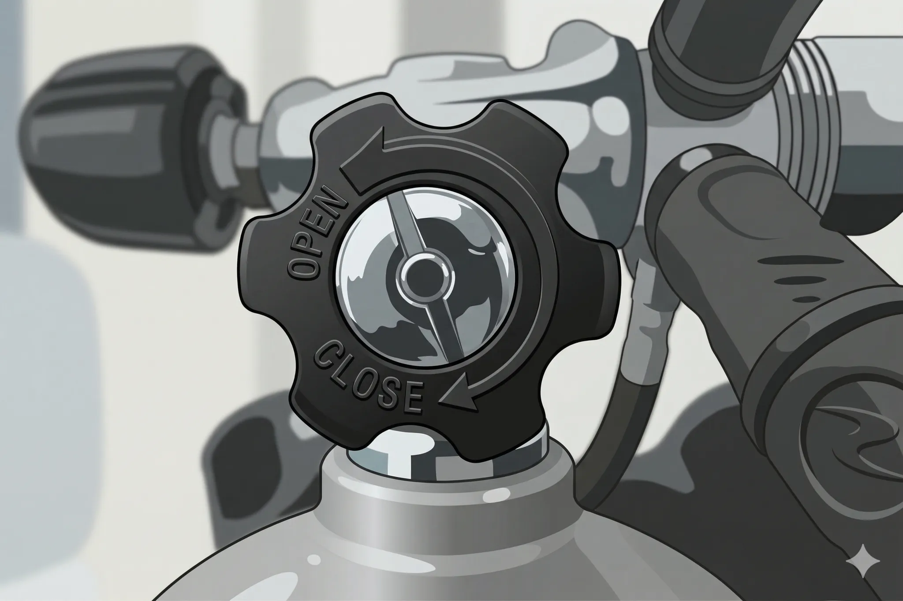

The road Orz passed by 2026 年 04 月
04 月 05 日 ( 日 )
Dive #149 タンクバルブ絡みのトラブル
1. この記事で取り扱うトラブルの内容
今日のエントリーではダイビングでよくある、でもトラブルになる遥か以前にガイドやスタッフが阻止することが多い、タンクバルブが少ししか開いてないときに起きるトラブルについて書いていきたいと思います。
タンクバルブが少ししか開いてない場合、ある程度の水深になるとレギュレーターからのエアの供給が止まります。しかもこれは陸上やボート上、浅い水深だとエアを吸えてしまうことから、気が付きにくいトラブルです。
この記事ではタンクバルブが少ししか開いてないときに何がおきるのか、そしてダイバーがどんな体験をすることになってしまうのか、そしてどうやって予防したら良いのかについての概略をまとめていきたいと思います。
この記事を書くきっかけになったのは PADI Worldwide の関連企業である SCUBA DIVING という企業の運営する Web 雑誌の以下の記事になります。もしご興味があるのなら英語になりますがご参照ください。
2. 日本のダイビングシーンでよく見かけるパターン
この記事に書かれているのは、ダイビングでよくある以下のようなシーンについてです。よくあるって言ってもエントリー前にスタッフが「バルブ全開になってませんよ〜♪」って開けちゃうので、トラブルにはなることはあまりありませんけど。
なお船長が誤ってバルブを閉めてしまうというシチュエーションはぼくは経験したことがありません。
決まり文句になりますが上記スライドのエピソードは全てフィクションであり登場人物は実在しません。
3. バルブが少ししか開いていないと何が起きるのか
最初に少しだけ復習しましょう。
タンク内の高圧の呼吸ガス --空気のことが多いので以降空気を呼吸ガスの代表として空気と記載します-- はそのままでは吸えませんから、レギュレータのファーストステージでまずは環境圧プラス６〜９気圧程度の気圧に減圧されるのでした (レギュレータによって異なります)。
つまり中圧ホース内は環境圧プラス６〜９気圧程度の空気で満たされているのでした。
そのままの空気圧だとやはり人は呼吸することはできませんから、中圧ホース内の空気は最終的にセカンドステージで環境圧とほぼ同じ圧力まで減圧されて、セカンドステージから供給されるのでした。
さてここでバルブが少ししか開いていない場合、なにが起こるのでしょうか。
実はタンクからレギュレーター内への空気の供給が不十分となり、中圧ホース内の空気圧が減るだけでなく、バルブが充分に開いていないことで、中圧ホースに空気が流れ込みにくくなります。
そうなると中圧ホース内の空気がセカンドステージに流れ込みにくくなり、空気を吸ってみると非常に吸いづらくなったり、水深が増えると環境圧が増えてしまい、中圧ホース内との圧力差が小さくなってしまい、そのためにある水深に達すると空気の供給が止まるといったことが起こります。
ボート上や陸上でゲージをチェックしたときは 200 気圧あったのに、ある程度の水深で空気が突然止まるといった経験をすることになります。
水面上では空気が供給されていたのに、ある水深になると空気の供給がとまってしまう、これがこのトラブルのやっかいなところです。
4. どんな人がやってしまうことが多いのか
タンクバルブを充分に開けないというミスをどんな人がやってしまうのでしょうか。
実はこのミスはビギナーの方だけでなく、1000 本以上潜っておられるようなベテランの方でもやってしまいます。また SCUBA DIVING の記事にあるように、ベテランの船長でもやってしまうことがあります。
なんでタンクバルブをわずかしか開けないミスが発生するのかという理由ですが、以下の理由があります。
- (1) タンクバルブの開け閉めがあまりにシンプルすぎる行為だから
-

図をみればわかるように、タンクバルブのバルブノブには "OPEN"、"CLOSE" といった文字がエンボス加工されていて、バルブを開くときには反時計回り、バルブを閉めるときは時計回りに回せばよいとわかるようになっています。
ですがこのエンボス加工された文字を見ながらノブを回す人はまずいません。自分は絶対間違わないと、なぜか大半の人が固く信じているからです。
ですがかなり多くの人が「あれ？どっちだっけ？」と一瞬逡巡することは日常です。ノブをどちらかに回すという行為があまりにシンプルすぎて、わからなくなってしまうのですね。
それで実際にあまりに多くの人が、ビギナーであろうと、たとえベテランダイバーであろうと、たまたま気を利かして普段やらないバルブのチェックをする船長であっても、うっかり間違えてバルブを閉めてしまうことがあります。ありますどころか現場感覚としてはめずらしくありません。
それがトラブルとして顕在化することが少ないのは、バディチェックで見つかったり、あるいはガイドやアシスタントがエントリー前に見つけるので重大事故に発展するケースが少ないということがあります。歴史的に培われてきたフェイルセーフのための行動が功を奏しているとも言えます。
- (2) タンクバルブを全開したあと半回転戻せと昔教えられていたから
-
現在のタンクバルブを開ける際の手順をご存知でしょうか？現在ではタンクバルブを全開にしたらそのままにしなさい、というのがスタンダートとされ、PADI、NAUI、SSI、CMAS 系など、ほぼ全ての指導団体ではそうせよと述べています。
以前にダイビングを始めた人なら、タンクバルブは全開にした後に半回転戻せ、と学んでいました。タンクバルブの破損や固着を防ぐためにそうせよ、と教えられていたのですね。
ですがこの半回転戻すというところをよく間違えられてしまい、以下のようなミスによるトラブルが頻発していたからなのでした。
- そもそもバルブを半回転しか開けない
- バルブを一度全開にしてそのときのノブの回転数を記憶しておき、その半分の回数だけバルブを開ける (半回転閉めるの誤った理解)
- 間違って開いていたバルブを完全に閉めてしまって半回転だけ開ける
- バディ・チェックでバディが間違ってバルブを完全に閉めてしまい、半回転だけ開ける (バディによるミス)
以上のようなミスがあまりにも多いため、またそれだけではなく、それが原因での死亡事故まで起きていることから、各指導団体はバルブは全開にせよ、という方向に舵を切ったのでした。
なぜ死亡事故にまでなるのでしょうか。それはすでに説明したように、このトラブルではボートや陸上ではセカンドステージからエアーが出ます。ですがある程度潜降するとエアーが止まります。
エアーが止まったときに適切にバディとオクトパスブリージングで水面に戻ったり、あるいは緊急スイミングアセントで水面に戻ることができればいいのですが、緊急浮上やバディ・システムに未習熟のダイバーの場合、水面への生還が困難になる場合があるのですね。
とくにオープンウォーターを取ったばかりや、アドバンスを取ったもののダイビング経験が充分でない場合、緊急浮上ができずに容易に窮地に追い込まれるなんてことがあるのですね。
なので現在ではタンクのバルブは開いているか閉まっているのかのどちらかにする、という運用に切り替わっています。
少しだけバルブが開いているという状態にはダイバーは気が付きにくいのですが、バルブが完全に閉じていればバルブが開いていないことに気がつきやすいからです。
5. 非推奨の対処方法
最初に非推奨の対処方法を述べます。
非推奨なのは水中でスクーバユニットを脱装し、タンクバルブを開けることです。
プロの中にはこれで対処しようとする人がいます。ですが非推奨です。プロであっても非推奨です。
なぜかというと、エアの供給が止まった時点では、その原因は特定できないからです。エアが止まったという事実だけでは、バルブの開きが不十分であったと判断することはできません。
もし原因がバルブではなく機材の故障であった場合、水中で機材を脱装してバルブの確認を行うことは、呼吸できない状況からの脱出に使うべき貴重な時間を失います。
その結果、どんなに優れたダイバーであっても一気に窮地に追い込まれます。
ですからこの方法は、どんな人であっても、たとえプロであっても非推奨です。
6. それよりも予防
どのようなトラブルでもそうなのですが、このような空気の供給が停止するような、あっという間に窮地に追い込まれるようなトラブルは、なんといっても予防が大切です。
もちろんバディにオクトパスでエアを分けてもらって水面に脱出したり、緊急スイミングアセント (CESA) で水面に脱出可能にするトレーニングは必須でしょう。やはり絶体絶命に追い込まれないための防護壁を何重にも用意することはとても重要です。何度やっても充分だということはありません。何度でもトレーニングを繰り返すべきです。
ですがこのようなトラブルの発生をあらかじめ防ぐことが最も大切です。
7. 超簡単な最終防壁
このタンクバルブを充分に開かないことで水中で窮地に追い込まれるトラブルを防ぐ方法は実はとても簡単です。
みなさんはエントリー前にバディ・チェックを必ずすると思います。していないのなら今日からしてください。そしてスタッフがバルブの開閉の最終確認をすることが多いでしょう。
お願いしたいのは、エントリーする直前、ボートであれば船べりに腰掛ける前に、必ず自分でセカンドステージをくわえ、ゲージを見ながら４、５回セカンドステージからエアーを吸ってみてください。
ゲージの針が動くようであれば、タンクバルブが少ししか開いていません。大変ですが機材を下ろしてバルブを全開にしてください。
なぜ４、５回レギュレータから空気を吸うのでしょうか。
それはそれまでに一度バルブを開けていて再びバルブを閉めた場合、たとえば港で機材の動作等をチェックした後にボートでポイントまで移動するときバルブを閉めるのは一般的ですが、バルブを完全に閉めていた場合であってもパージしていなければ中圧ホース内に中圧の空気が残っていて最初はエアーが出ます。ですから一回だけレギュレータからエアを吸っても、異常を検出できません。
そういった場合、バルブが閉まっているのですから、やはり水深数メートルでエアの供給は止まります。落ち着いて水面に戻れるのなら良いのですが、戻れない人がいます。エアが吸えない状態で水面に戻れないので大変なことになってしまいます。
なので１回吸って針が動かないから大丈夫と考えるのではなく、４、５回吸ってみてエアが止まらないか、バルブが完全に閉まってないかも必ずチェックしてください。
8. 最後に
これまで述べてきたことを対策を中心に整理します。以下を実行してください。
- 最終確認は必ず自分で行う
- 最終確認は４、５回レギュレーターから呼吸する
- 最終チェックはエントリー直前に落水の危険の無いところで行う
- タンクバルブはいつも全開にする
- バディ・チェックは必ず行う
- もし水中でエアの供給が止まったら水面に戻ることを最優先
- 水面に戻るためのバディ・システムを遵守
どうか安全で楽しいダイビングを。
- Category :
- #Records of Orz's Road
- #スクーバダイビング
- #ダイビング
- #タンクバルブ
- #シリンダーバルブ
- #トラブル
- #ヒヤリハット
- #安全
- #事故